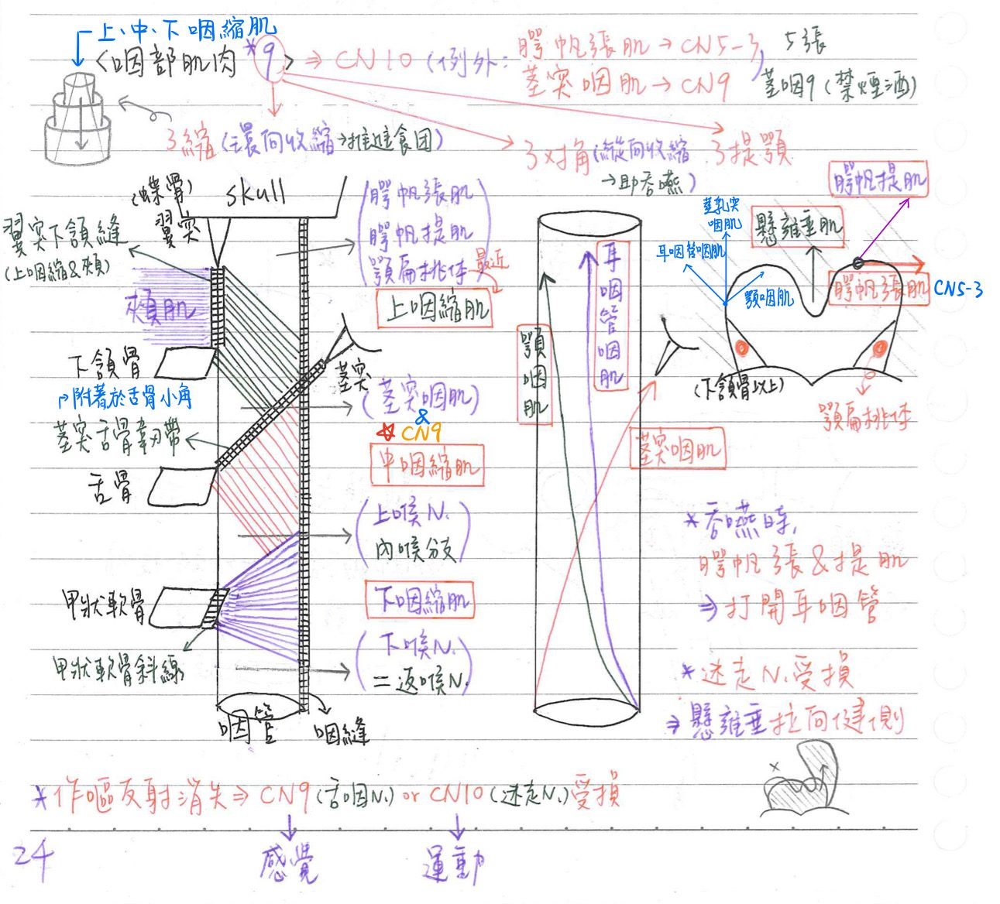

🚿 肌肉系統：咽部肌肉
- 咽部肌肉有九條，可分為三縮、三對角、三提顎
- 大多是由迷走N支配
- 例外：★★腭帆張肌(CN5-3)、★莖突咽肌(CN9) <tip>：5張、莖咽9(禁菸酒)-
- 吞嚥時：張腭帆肌、提腭帆肌幫助打開耳咽管
- 咽神經叢(pharyngeal plexus)：由舌咽N(CN9)、迷走N(CN10)(最主要)、副神經(CN11)的顱根(cranial root)以及交感神經纖維構成 ⇒ CN9, 10(主要), 11+交感
- 神經損傷測試：
- 作嘔反射(gag reflex)消失：舌咽N(感覺) or 迷走N(運動)受損(tip：9進10出)
- 單側迷走N(或副N)受損→患側軟顎無法上提→懸壅垂偏向健側
- 翼突下頷縫(pterygomandibular)：上咽縮肌-頰肌的接縫
- 內喉N (上喉N之分枝)：通過中、下咽縮肌之間
- 喉返N(=下喉N)：通過下咽縮肌下方

三重疊縮肌：環向收縮、幫助推進食團
| 肌肉 | 神經支配 | 附著處 | 備註 |
|---|---|---|---|
| 上咽縮肌 (sup. pharyngeal constrictor m.) | 迷走N 咽神經叢 | 前：★翼突下頷縫 後：咽縫(顱底-C6) | 顎帆張肌、顎帆提肌通過上咽縮肌上方 靠近顎扁桃體外側 |
| 中咽縮肌 (mid. pharyngeal constrictor m.) | 迷走N 咽神經叢 | 前：莖突舌骨韌帶 後：咽縫(顱底-C6) | |
| 下咽縮肌 (inf. pharyngeal constrictor m.) | 迷走N 咽神經叢 | 前：甲狀軟骨斜線 後：咽縫(顱底-C6) |
三重疊縮肌：環向收縮、幫助推進食團
| Name | 神經支配 | 運動 |
|---|---|---|
| 張腭帆肌(tensor veli palatini m.) | ★★三叉N下頷支(CN V3) | 緊繃軟顎 |
| 提腭帆肌(levator veli palatini m.) | 迷走N-咽神經叢 ★副N之顱根，轉經迷走N | 上提軟顎 |
| 懸壅垂肌(Muscles uvulae) | 迷走N-咽神經叢 | 上提懸壅垂 |
三對角縱肌：縱向收縮、★上提咽部，助吞嚥
| 肌肉 | 神經支配 | 備註 |
|---|---|---|
| 耳咽管咽肌(salpingopharyngeus m.) | 咽神經叢,迷走N(CN10) | |
| 顎咽肌(palatopharyngeus m.) | 咽神經叢,迷走N(CN10) | |
| 莖突咽肌(stylopharyngeus m.) | ★★舌咽N(CN9) | 莖突咽肌、★CN9： 通過上、中咽縮肌中間 |
📖 書本補充：與筆記不同或筆記沒寫到的地方
⚠️
以下為對照書本後整理，筆記原文未更動。標「筆記 vs 書」的是兩邊寫法不同、建議回頭確認的地方。
咽壁肌肉的功能（p.561）
- 內縱（莖突咽、腭咽、耳咽管咽）：吞嚥及說話時提起（變短及加寬）咽和喉。
- 外環（上、中、下咽縮肌）：吞嚥時收縮咽壁。
咽縮肌的前方附著（p.561–562）
- 書的提示：上、中、下咽縮肌前方分別附著於翼下頷縫、舌骨、甲狀和環狀軟骨。
- 筆記 vs 書：
- 中咽縮肌：筆記寫前方附著「莖突舌骨韌帶」；書寫舌骨（102-2-5 解析：附著在舌骨大角上的是中咽縮肌）。兩者並不衝突（中咽縮肌附在莖突舌骨韌帶下端與舌骨角），但考題用「舌骨」。
- 下咽縮肌：筆記只寫「甲狀軟骨斜線」；書寫甲狀軟骨和環狀軟骨。
穿過咽壁的構造（p.561）
| 位置 | 穿過的構造 |
|---|---|
| 上咽縮肌上方 | 腭帆提肌、耳咽管、咽升動脈 |
| 上、中咽縮肌之間 | 莖突咽肌、舌咽神經、莖舌骨韌帶 |
| 中、下咽縮肌之間 | 喉內神經、喉上血管 |
| 下咽縮肌下方 | 喉返神經、喉下動脈 |
- 喉內神經與喉上血管會一起穿過甲狀舌骨膜，所以剛好從中、下咽縮肌之間通過（p.561 提示）。
- 筆記寫「顎帆張肌、顎帆提肌通過上咽縮肌上方」；書的表格只列腭帆提肌（腭帆張肌在咽壁外側、繞過翼鉤進軟腭，見下）。
咽神經叢（p.561）
- 筆記 vs 書：筆記寫咽神經叢＝CN9、10（主要）、11 顱根＋交感。書是用「咽壁的神經支配」來列，來源分三條：
- 迷走神經咽支（運動＋感覺）：莖突咽肌以外的所有咽肌運動、喉咽黏膜感覺
- 舌咽神經咽支（感覺）：口咽黏膜（咽反射的傳入）、腭扁桃體的感覺
- 上頷神經 V2（感覺）：鼻咽黏膜
- 記法：鼻咽、口咽、喉咽的黏膜感覺依序是上頷 V2、舌咽、迷走（107-2-3 解析）。
- 會厭附近黏膜（感覺與味蕾）由迷走神經的喉內神經負責（111-1-12）。
軟腭的肌肉（p.535）
- 腭帆張肌（V3）：拉緊軟腭並打開耳咽管；它從上往下繞過內側翼板的翼鉤後止於軟腭，所以能把軟腭往兩側拉緊。
- 腭帆提肌（迷走）：提起軟腭的唯一肌肉。
- 腭咽肌（迷走）：下壓軟腭並提起咽。
- 腭舌肌（迷走）：下壓軟腭並提起舌頭。
- 懸壅垂肌（迷走）：協助腭帆提肌關閉鼻咽與口咽間的通道。
- 腭咽肌和腭舌肌之間是腭扁桃體，血液主要來自顏面動脈的分支。
- 翼下頷縫：前方是頰肌的起點、後方是上咽縮肌的起點（與筆記一致）。
咽弓來源（p.95、p.472）
- 莖突咽肌＝第三咽弓（CN IX）；咽縮肌、腭咽、腭舌、提腭帆、環甲肌＝第四咽弓（CN X）；腭帆張肌＝第一咽弓（V3）。
- 書的提示：簡單說，第 4 和第 6 咽弓發育成咽和喉的肌肉；第 5 咽弓在發育中消失。
📝 書中歷屆考題（點選答案作答）
105-1-6p.562
下列何者由上、中咽縮肌之間通過？
106-2-3p.562
咽部壁上的縱走肌肉收縮會對咽產生何種作用？
107-2-3p.563
下列何者受到傷害，最可能造成病人口咽處黏膜一般感覺缺失？
💡 鼻咽、口咽、喉咽的黏膜感覺分別由上頷、舌咽及迷走神經負責。
111-1-12p.563
口腔底部近會厭軟骨 (epiglottis) 的黏膜，其神經支配為：
💡 會厭附近的黏膜及味蕾都由迷走神經的內喉（喉內）分支負責。
112-1-12p.506
下列何者由第九對腦神經 (CN IX) 負責？
💡 舌頭後 1/3 的肌肉歸舌下神經（舌咽管的是後 1/3 的感覺）；耳廓感覺由三叉、顏面、迷走及頸神經負責；腭帆張肌是三叉N。 Claude 註：同一題在 p.567 又出現一次，題號印成 112-2-12，答案欄印「A」。但該頁的解析和 p.506 一字不差，明確指出 A 錯（舌後 1/3 肌肉＝舌下N）、C 是三叉N，所以 p.567 的「A」應是印刷錯誤，正解為 D（莖突咽肌）。題號以哪一個為準，書上兩處不一致，無法從書確認。